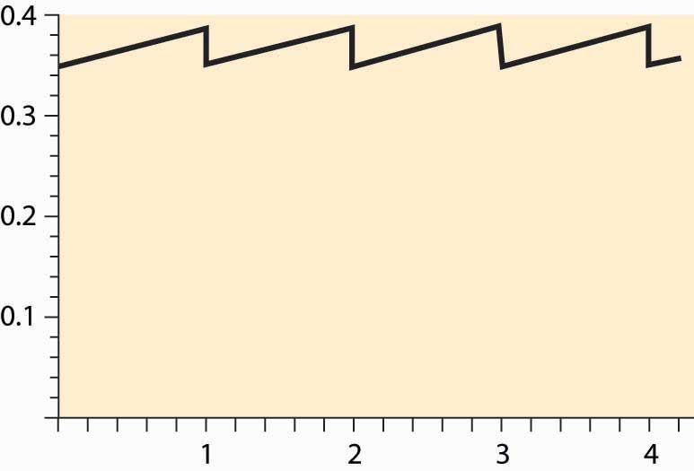
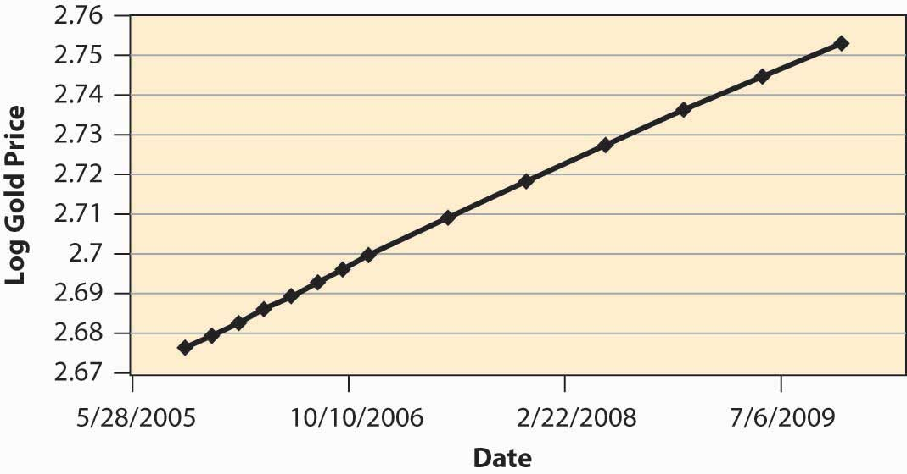

Typically, wheat harvested in the fall has to last until the following harvest. How should prices evolve over the season? If I know that I need wheat in January, should I buy it at harvest time and store it myself, or wait and buy it in January? We can use a theory analogous to the theory of collectibles developed in Section 11.6 "Collectibles" to determine the evolution of prices for commodities like wheat, corn, orange juice, and canola oil.
Unlike collectibles, buyers need not hold commodities for their personal use, since there is no value in admiring the wheat in your home. Let p(t) be the price at time t, and suppose that the year has length T. Generally there is a substantial amount of uncertainty regarding the size of wheat harvests, and most countries maintain an excess inventory as a precaution. However, if the harvest were not uncertain, there would be no need for a precautionary holding. Instead, we would consume the entire harvest over the course of a year, at which point the new harvest would come in. It is this such model that is investigated in this section.
Let δ represent the depreciation rate (which, for wheat, includes the quantity eaten by rodents), and let s be the storage cost. Buying at time t and reselling at t + Δ should be a break-even proposition. If one purchases at time t, it costs p(t) to buy the good. Reselling at t + Δ, the storage cost is about sΔ. (This is not the precisely relevant cost; but rather it is the present value of the storage cost, and hence the restriction to small values of Δ.) The good depreciates to only have left to sell, and discounting reduces the value of that amount by the factor For this to be a break-even proposition, for small Δ,
or
taking the limit as Δ → 0,
This arbitrage condition ensures that it is a break-even proposition to invest in the good; the profits from the price appreciation are exactly balanced by depreciation, interest, and storage costs. We can solve the differential equation to obtain
The unknown is p(0). The constraint on p(0), however, is like the resource extraction problem—p(0) is determined by the need to use up the harvest over the course of the year.
Suppose demand has constant elasticity ε. Then the quantity used comes in the form Let z(t) represent the stock at time t. Then the equation for the evolution of the stock is This equation is obtained by noting that the flow out of stock is composed of two elements: depreciation, δz, and consumption, x. The stock evolution equation solves for
Thus, the quantity of wheat is consumed exactly if
But this equation determines the initial price through
This equation doesn’t lead to a closed form for p(0) but is readily estimated, which provides a practical means of computing expected prices for commodities in temporarily fixed supply.
Figure 11.7 Prices over a cycle for seasonal commodities
Generally, the price equation produces a “sawtooth” pattern, which is illustrated in Figure 11.7 "Prices over a cycle for seasonal commodities". The increasing portion is actually an exponential, but of such a small degree that it looks linear. When the new harvest comes in, prices drop abruptly as the inventory grows dramatically, and the same pattern is repeated.
Figure 11.8 Log of price of gold over time
How well does the theory work? Figure 11.8 "Log of price of gold over time" shows the log of the future price of gold over time. The relevant data come from a futures market that establishes, at one moment in time, the price of gold for future delivery, and thus represents today’s estimate of the future price of gold. These data, then, represent the expected future price at a particular moment in time (the afternoon of October 11, 2005), and thus correspond to the prices in the theory, since perceived risks are fixed. (Usually, in the real world, risk plays a salient role.) We can observe that prices are approximately an exponential, because the log of prices is approximately linear. However, the estimate of r + δ is surprisingly low, at an annual level of less than 0.03, or 3% for both discounting and depreciation. Depreciation of gold is low, but this still represents a very low interest rate.